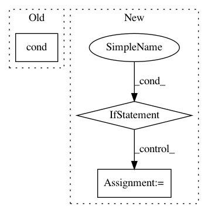

f5ef1717933abb45db9669a724a6a4404818375b,basenji/metrics.py,StochasticReverseComplement,call,#StochasticReverseComplement#Any#,127
Before Change
rc_seq_1hot = tf.gather(seq_1hot, [3, 2, 1, 0], axis=-1)
rc_seq_1hot = tf.reverse(rc_seq_1hot, axis=[1])
reverse_bool = tf.random_uniform(shape=[]) > 0.5
src_seq_1hot = tf.cond(reverse_bool, lambda: rc_seq_1hot, lambda: seq_1hot)
return src_seq_1hot, reverse_bool
class SwitchReverse(tf.keras.layers.Layer):
def __init__(self):
After Change
count = tf.ones_like(y_true)
count = tf.reduce_sum(count, axis=[0,1])
self._count.assign_add(count)
def result(self):
true_mean = tf.divide(self._true_sum, self._count)
true_mean2 = tf.math.square(true_mean)
pred_mean = tf.divide(self._pred_sum, self._count)
pred_mean2 = tf.math.square(pred_mean)
In pattern: SUPERPATTERN
Frequency: 3
Non-data size: 3
Instances
Project Name: calico/basenji
Commit Name: f5ef1717933abb45db9669a724a6a4404818375b
Time: 2019-06-22
Author: drk@calicolabs.com
File Name: basenji/metrics.py
Class Name: StochasticReverseComplement
Method Name: call
Project Name: geomstats/geomstats
Commit Name: fd47e5b875c44b7dd511b192d6c7dbcfdb010ef7
Time: 2020-04-08
Author: niklas.koep@gmail.com
File Name: geomstats/geometry/lie_group.py
Class Name: LieGroup
Method Name: log
Project Name: geomstats/geomstats
Commit Name: fd47e5b875c44b7dd511b192d6c7dbcfdb010ef7
Time: 2020-04-08
Author: niklas.koep@gmail.com
File Name: geomstats/geometry/lie_group.py
Class Name: LieGroup
Method Name: exp